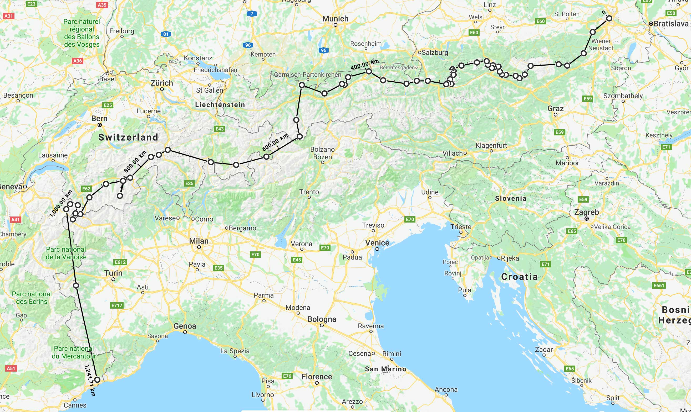

This summer I will be hiking the length of the Alps, from the foothills outside of Vienna to the shores of the Mediterranean Sea in Monaco. The route will be around 2000km and shit loads of vertical, most likely upwards of 100,000 meters (300,000 feet). That's like climbing from sea level to the top of Everest OVER 10 TIMES!
I will be camping most of the time, only using the huts and refuges when the weather turns really bad. You can check out the equipment I will be taking on Pack Shakedown
As an avid photographer and filmer, you can bet I will be creating some amazing images and vlogs of the trip. You can check those out on my YouTube channel and on my Instagram. Be sure to give me a follow. I will try to post a video at least once a week.
I am hoping to meet up with Marie and Nil, who are doing a 10,000km thru-hike of Europe, and hike some parts of Switzerland with them. Check out their amazing trip on their website and on Facebook
If you want to hike or meet up with me, hit me up on Twitter, Instagram, or Facebook!
I will be carrying a Garmin InReach and will try to keep the tracker running. You can check out my progress here.
Currently, my planned start date is the 16th of June, 2018. The entire hike should take around 3 months. I am planning on planning as little as possible, so my route will be quite flexible. I will start out on the Nordalpenweg toward Innsbruck, and then see from there...
These majestic mountains are the main reason for this trip. After moving to Switzerland beginning of last year I have spent a lot of time in the mountains, but there is still so much more to explore!
After watching Hare Scramble for years, I just have to check out this massive iron mine. Located next to the town of Eisenerz, Austria and conveniently right on the Nordalpenweg.
At 2,962m above sea level, the Zugspitze is the highest mountain in Germany, making it worth a visit to attempt a summit.
The Alpine Passes Trail is a 33 stage hiking trail along the bottom of Switzerland, stringing together some of the most beautiful passes. I will be following this trail for most of it's length, as I love hiking passes.
Vier-Quellen-Weg translates to "Four Sources Trail" and is a hiking trail that visits the sources of four rivers, the Rhine, Reuss, Ticino and Rhone. I have lived close to the Rhine River for years, so visiting the source at Lake Toma and finding a spot to jump over it is a must!
Spanning 500 meters, the Charles Kuonen suspension bridge is currently the longest in the world, and certainly worth a visit!
I definitely have to go check out the largest glacier in the Alps, before global warming makes it disappear completely!
As an avid trail-runner, visiting Mont Blanc during UTMB is a bucket-list item. The timing should work out well, as the race will be happening beginning of September this year.
If you would like to support me, check out my Patreon page, any amount helps.